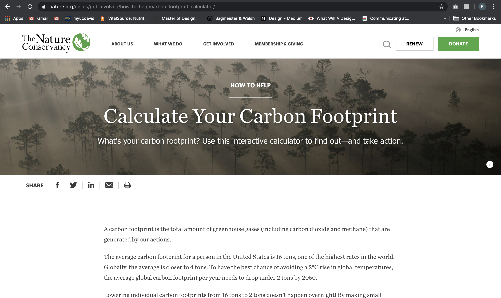
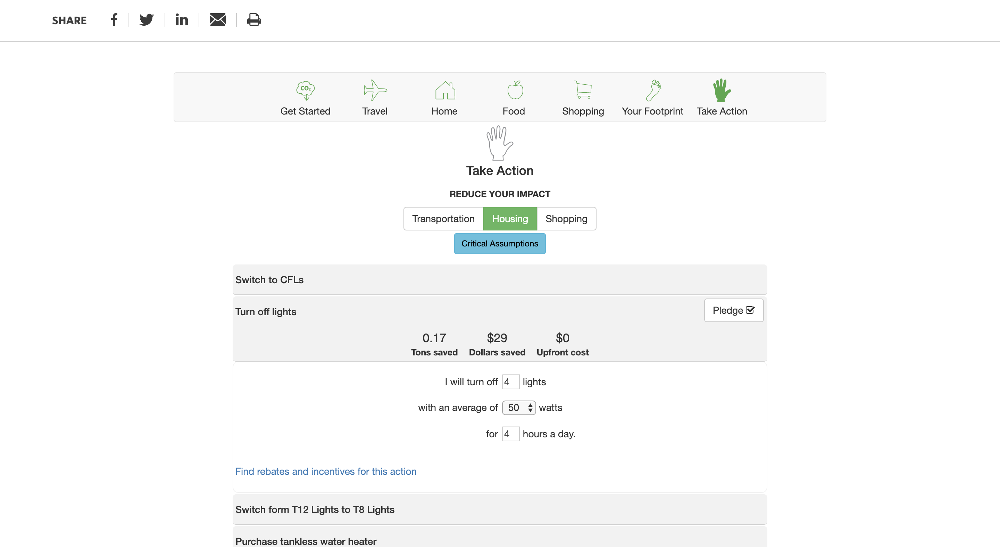
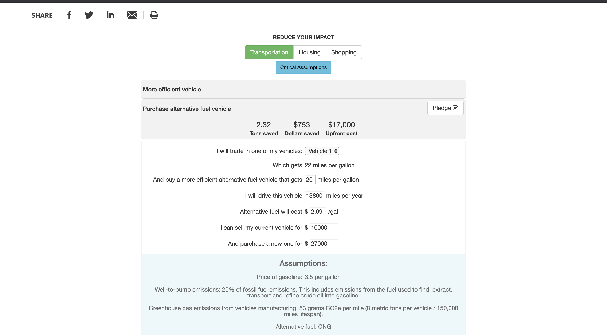
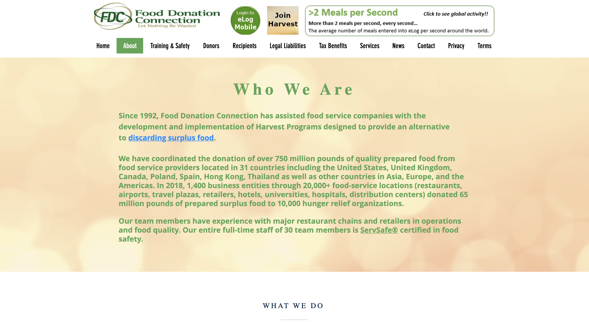
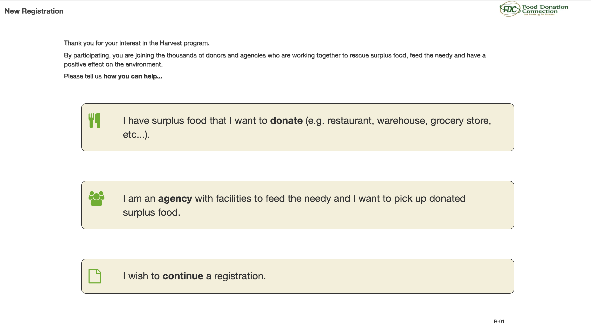
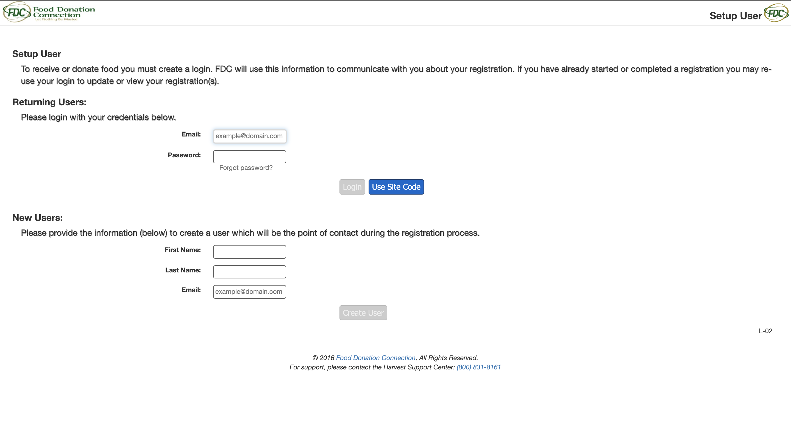

Comparative Research: The Nature Conservancy
  The Nature Conservancy is a global environmental nonprofit that aims to raise money and educate its users about a variety of global environmental issues. One of the ways they educate their users is through interactive calculators that generate one's carbon footprint per year. The program also allows users to compare their usage to the average usage of people across the united states. The interactions across this website are well designed, easy to use, and easy to follow. The user begins at the “get started” icon and goes through the list including: home, food, shopping, your footprint, and then take action. Throughout each step the user gets to see their results compared to the average. Finally, the user can go through different ways to lessen their carbon footprint and then compute how much money and energy they could save using these alternatives. A successful part of the design are two buttons that change the results from a pie chart to a graph, making it easier for the user to comprehend their results. The biggest design issue I see with this page are three random bars at the bottom of the page stating X tons save, X dollars save, and X upfront cost. This section is not cohesive with the rest of the design and could be incorporated in a more engaging and useful way.
While the forms are relatively easy to use, the wording and flow of content isn’t as effortless. For example, the average person is not going to know how much money they spend on natural gas, heating oil, and other fuels a year. I am not sure how this could be made easier for the user, but definitely something to think about. Further, the food section has two buttons that are small and unnoticeable that can be clicked to show “simple” or “advanced” foods. However, the simple foods are pretty much the same as “advanced” so I am not entirely sure what the point of this is.
the concept of having an interactive carbon footprint calculator on a website aimed to gain donation for environmental causes is very smart. While the design of the calculator has a few kink, I feel as though there is a strong underlying layout that could be useful for my own project. I almost feel that the calculator options on this site are too much and could be even more effective with a more direct design that shows clearly your own footprint and then comparees at the end instead of incorporating it at every step.
Comparative Research: Food Donation Connection
  The second website I evaluated called “Food Donation Connection,” aims to connect food services and companies to donation programs. This website is incredibly outdated and could certainly use a renovation considering how incredibly beneficial this service is. The Food Donation Connection program has coordinated over 750 million pounds of quality prepared food from service providers in 31 countries! This is amazing, but their website is poorly organized and designed making the website almost look fake (I wonder if this is a millennial thing?), which would make clients potentially less inclined to reach out. There are interactive elements throughout the website including forms and buttons. However, these elements and even their “call to action” buttons are hard to find, find, and follow.
The biggest issue with interaction on this website is the registration form to become a part of the program. The first drawback is the large paragraph of text on the page has a shadow making it hard to read. The three boxes on the registration page have no visible buttons to click and don’t change color when the mouse hovers over them. This makes it difficult for the user to know where and what to click. It is useful that ‘donate’ and ‘agency’ are highlighting, so that it is clear which to choose, but ‘continue’ is also highlight making it even more confusing where to click. When the user does choose an option the form that appears is monochromatic which one button highlighted in blue. While there is some hierarchy in the type, the color scheme makes it hard for the eye to go to the right place because everything looks the same. There can be a lot of text removed from this page to be more effective. The most successful interactive aspect of this page is that when you add your email and password, the login button won’t turn green and allow you to click until the correct format of email is typed.
Overall, this website's design and interactivity is outdated and doesn't use its forms and buttons efficiently. There are a lot of changes that could be made to enhance the users experience and work better with the content. I am interested in this topic and creating an interactive site or event that could help the issue of food waste.